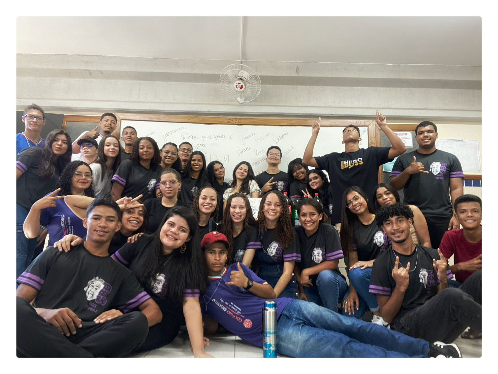
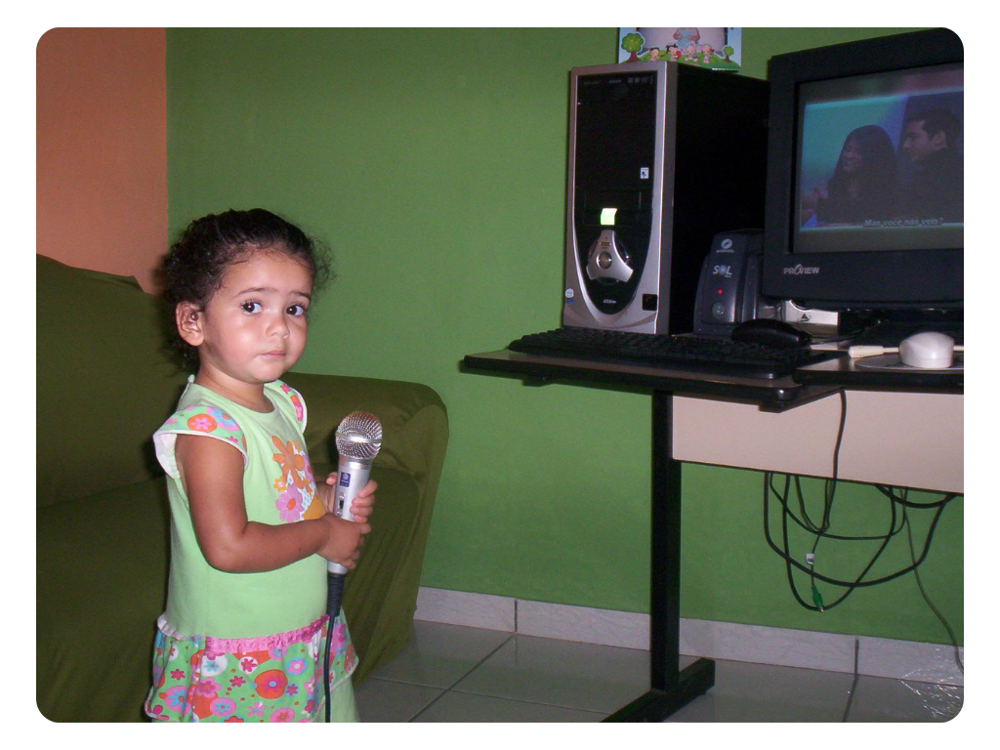
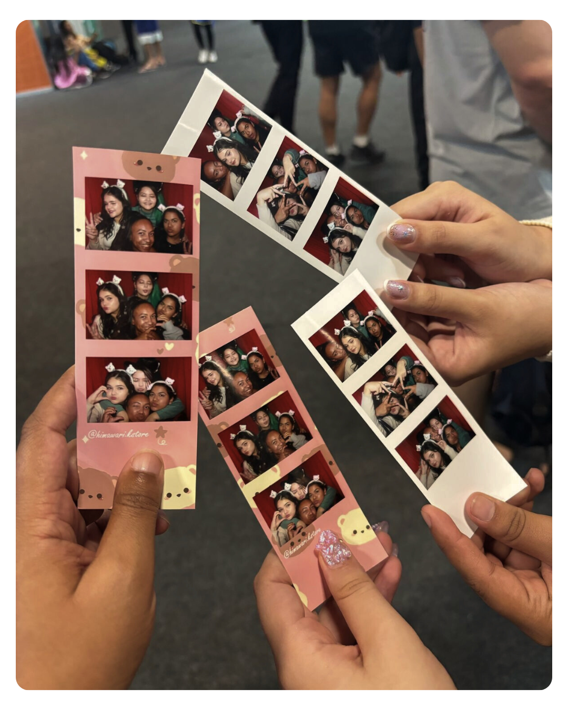
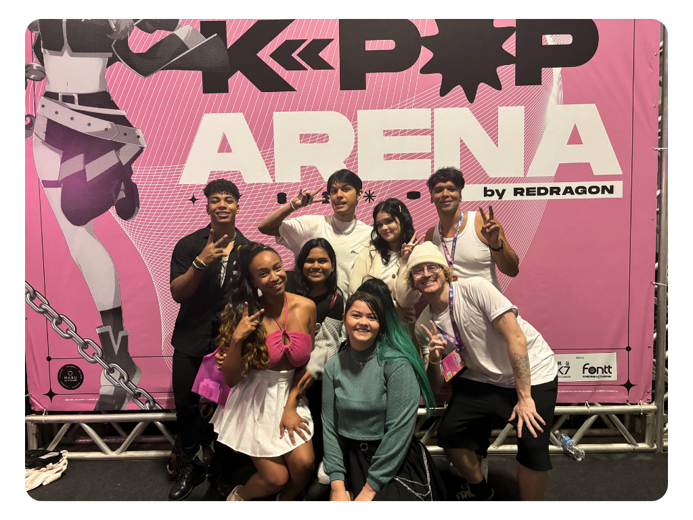

Meu nome é Mariana, mas gosto que me chamem de Mari.
Nascida e criada em Itamaraju(BA) até meus 19 aninhos, hoje estou aqui em Vila Velha em busca de novas oportunidades e experiências.
Durante minha infância e adolescência passei por muitas instituições de ensino, todas em Itamaraju: Escolinha Gurilândia, Escola Fênix, Colégio Presbiteriano 12 de Agosto, Colégio Militar Reitor e o CEPRAJ, Colégio Estadual em que completei meu EM todinho.
Sempre fui uma pessoa muito ativa nos projetos da escola. Já protagonizei peças de teatro, fui solista no coral dozeano e do Fênix, elaborei projetos de pesquisas científicas para a FECIBA, venci competições de dança e de produção de vídeos como o PROVE(Produção de Vídeos Estudantis da Bahia).
Eu realmente fiz bastante coisa durante esses anos, então não vou conseguir lembrar de todas.
Sou uma pessoa bem ambiciosa, com muitos sonhos e objetivos, que não caberiam aqui. Mas pra resumir, desde muito nova tive um apego especial à tecnologia e coisas que trabalhassem minha criatividade, então sempre fui a garota do design, dos vídeos e do "pergunta pra Mari que ela dá um jeito de fazer".
Depois de muito pesquisar sobre e mergulhar nesse mundo, descobri que a Ciência da Computação se alinha perfeitamente com o futuro que quero alcançar, por isso escolhi o curso, e até então estou gostando muito mais do que imaginei que gostaria.
Eu realmente sou viciada em colecionar hobbies, sou o tipo de pessoa que descobre um diferente toda semana. Mas vou mostrar aqui os que mais amo!
Nenhum outro poderia iniciar essa lista. Cantar é algo muito especial pra mim, meu avô cantava, minha tia canta, meu pai apaixonado por tudo que envolve música, então eu não poderia ser diferente.
Eu sempre cantei na igreja e sempre fui icentivada pela minha família a investir nisso, mas nunca quis seguir de verdade a carreira da música por muitos fatores.
Em 2021 eu entrei em um grupo de Vocal Cover, até 2025. Nossa página no TikTok, @estelargroup, alcancou mais de 350k de seguidores e vídeos cantando com milhões de visualizações.
Ano passado tivemos a oportunidade de apresentar no Anime Friends, competindo o prêmio do NoraePOP. Experiência inesquecível!
 O Estelar foi uma fase muito precisosa da minha vida, mas infelizmente, a falta de tempo e problemas pessoais não permitiu que nós continuássemos como grupo.
Aqui abaixo você pode escutar uma das minhas playlists do Spotify:
Meu pai, apaixonado por música, me presenteou com um teclado quando eu era mais nova e sempre amei tocar.
Apesar de nunca ter me especializado, eu consigo tocar minhas músicas favoritas decorando as posições dos dedos no teclado. Pra mim, tocar é como dançar. Saudades, inclusive. Tive que abandonar o hobbie quando decidi vir morar em Vila Velha.
Criar designs é algo que eu faço desde meus 8 anos(se eu me lembro bem), tudo por causa do PowerPoint. Sempre cresci criando, editando, ilustrando minha vida no computador.
Hoje tenho muita facilidade em me adaptar à ferramentas da área e me considero boa nisso, é algo que realmente gosto muito!
Tudo começou quando, durante minha infância, conheci o desenho "Super Spy", protagonizado por um super-herói que resolve os problemas com a ajuda do inglês.(kkkkkkk)
É meio complicado de explicar, mas esse desenho foi algo que realmente me incentivou muito a aprender a língua, e deste então, cresci como uma pessoa apaixonada por aprender e conhecer novas culturas e idiomas. Tenho muita vontade de viajar pelo mundo.
Hoje tenho inglês avançado, coreano intermediário, atualmente estou aprendendo japonês e pretendo começar o francês e chinês.